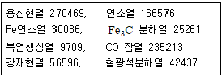
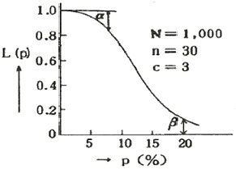

제강기능장 (2014-07-20 기출문제)
1과목: 임의 구분
1. 용선 245톤, 냉선 15톤, 고철 30톤을 전로에 장입하였을 때 전선비는?
- 84.5%
- 89.7%
- 94.8%
- 95.5%
(정답률: 73%)

2. 철강을 생산시 탈산을 목적으로 사용되는 원소가 아닌 것은?
- S
- Mn
- Al
- Si
(정답률: 89%)
3. 제강과정에서 Si 는 FeO 또는 O에 의하여 강재 중으로 들어가며 이때 열을 발생 하므로 주요한 열원이 되는데 이 때 기본 반응식으로 옳은 것은?
- Si + 2O = SiO3
- Fe0 + Si = Fe + SiO2
- 2Fe0 + Si = 2Fe + SiO2
- 2FeO + 2Si = 2Fe + SiO2
(정답률: 82%)
4. 전기 제강로에 사용되는 천정연와에 대한 설명으로 틀린 것은?
- 하중 연화점이 높을 것
- 연화시 점성이 낮을 것
- 내화도가 높고 품질의 변동이 적을 것
- 열간강도가 크고 아치연와에 적합할 것
(정답률: 88%)
5. 고주파 유도로가 특수강의 용해에 사용되는 이유가 아닌 것은?
- 고합금강에 대한 용해가 유리하기 때문
- Ni. Co. Mo 등은 회수가 가능하기 때문
- 탈탄, 탈인, 탈황 등이 우수하기 때문
- 노내 용강의 성분 및 온도의 제어가 쉽기 때문
(정답률: 86%)
6. 저취전로법(Q-B0P법)의 특징을 설명한 것 중 틀린 것은?
- 랜스가 필요 없어 건물의 높이를 낮출 수 있다.
- 취련시간이 단축되고, 폐가스의 효율적인 회수가 가능하다.
- C, O 의 값이 평형값에 가까워져 극저탄소강의 제조에 적합하다.
- 풍구를 통하여 순산소와 가스, 액체연료, 분체석회 등을 로저로부터 동시에 취입할 수 없다.
(정답률: 64%)
7. 슬래그의 성분이 SiO2 34.8%, CaO 48.6%, Al2O3 16.6% 인 경우 영기도는 약 얼마인가?
- 0.7
- 1.4
- 2.4
- 3.4
(정답률: 73%)
8. 슬로핑(slopping)이 일어나는 경우가 아닌 것은?
- 용선 배합률이 낮은 경우
- 용광로 슬래그의 혼입이 많은 경우
- 슬래그 배재를 충분히 하지 않은 경우
- 내용적에 비하여 장입량이 과다하게 많은 경우
(정답률: 94%)
9. 전로 취련제어 중 서브랜스(sublance)법에 의해 측정 할 수 없는 것은?
- 용강 온도
- 산소 농도
- 슬래그 레벨
- 출강구 레벨
(정답률: 81%)
10. 품질을 향상함과 동시에 생산성을 높이고 원가를 절감하려는 목적으로 발달한 방법인 레이들 정련법이 아닌 것은?
- ASEA-SKF법
- VAD법
- LF법
- VFD법
(정답률: 62%)
11. 전기로의 산화정련 작업에서 강욕 중 각원소의 산화반응으로 틀린 것은?
- Si + 2O → SiO2
- Mn + O → MnO
- 2P + 5O → P2O5
- 2C + 2O → CO2
(정답률: 80%)
12. LD전로제강에서 산소 취련시 가장 먼저 산화제거되는 원소는?
- C
- Si
- Mn
- Cr
(정답률: 88%)
13. 더스트(dust)를 집진하고 폐가스를 적정온도로 냉각시키는 폐가스 냉각설비가 아닌 것은?
- LDS(Linz Donawitz Stirring) system
- OG(Oxygen Gas Recovery) system
- LT(Lurgi Thyssen)-Dry system
- New-OG system
(정답률: 71%)
14. 탈황(S)을 유리하게 하는 조건으로 옳은 것은?
- 용재의 영기도는 낮추고 강욕 온도를 높인다.
- S와 친화력이 강한 C, Cr 등의 원소를 용강에 첨가한다.
- S의 활량을 높이는 C, Si 등을 용철 중에 있게 하여 탈황에 유리하게 한다.
- 용강 중의 산소는 산소전로에서 적은 것이 기화탈황에 유리하다.
(정답률: 65%)
15. [보기]와 같은 열정산의 입열과 출열 항목을 갖는 250t/ch 전로에서 출열 합계는 몇 kcal/t 인가? (단, [보기]에 주어진 수치의 단위는 kcal/t 이다.)

- 99033
- 334246
- 737314
- 837314
(정답률: 75%)
16. 턴디시에 관한 설명으로 틀린 것은?
- 주형으로 용강을 분배한다.
- 용강 응고를 촉진하는 역할을 한다.
- 용강을 일시 저장하는 역할을 한다.
- 개재물의 부상분리를 하는 역할을 한다.
(정답률: 83%)
17. 용융철 합금에서 질소의 활량계수를 높이는 원소가 아닌 것은?
- Cr
- Si
- Ni
- C
(정답률: 45%)
18. 전로조업서에 탈인반응과 탈황반응을 촉진시키는 방법은 여러점에서 유사하나 한쪽 반응은 촉진시키지만 다른쪽 반응은 방해하는 조건은?
- 강재량이 많다.
- 강재의 유동성이 좋다.
- 강욕의 온도가 높다.
- 강재의 염기도가 높다.
(정답률: 72%)
19. 전로조업의 특징을 설명한 것으로 틀린 것은?
- 제강시간이 빠르다.
- 장입원료는 용선이다.
- 산화반응열을 이용한다.
- 반드시 연료가 필요하다.
(정답률: 95%)
20. 대형 연주기에서 용강을 주형으로 주입할 경우 침지노즐을 사용할 때 파우더(powder)를 이용하여 파우더 캐스팅을 행하게 되는 경우의 설명 중 틀린 것은?
- 파우더는 Al2O3-SiO2-CaO계의 합성 슬래그이다.
- 용강면을 덮어 공기산화와 열방산을 방지한다.
- 용융한 파우더가 주형벽으로 흘러서 윤활제로서 작용한다.
- 용융한 파우더가 용강 중에 함유된 알루미나와 결합하여 슬래그를 형성한다.
(정답률: 73%)
2과목: 임의 구분
21. 연속주조 작업에서 주형에 주입된 용강에 대한 1차 냉각과 2차 냉각 중 1차 냉각에 대한 설명으로 옳은 것은?
- 용강에 직접 물을 뿌리는 것이다.
- 공기 중에서 간접적으로 냉각하는 것이다.
- 주형 외측에 냉각수를 공급하여 동판에 의한 간접 냉각이다.
- 주형을 빠져 나온 주편에 직접 냉각수를 뿌리는 것이다.
(정답률: 84%)
22. 레이들(Ladle)내에서 불활성가스 취입에 의한 교반(Bubbling)작업의 목적이 아닌 것은?
- 용강의 청정화
- 온도의 균일화
- 교반에 의한 온도 상승
- 성분균일화 및 성분조정
(정답률: 82%)
23. 강욕의 탈탄과정에서 슬래그가 가스상으로 부터 흡수한 산소를 강욕면까지 운반하는 속도는 어느 것에 영향을 받는가?
- 강재의 유동성과 교반
- 강재의 산화력과 교반
- 강재의 염기도와 환원력
- 강재의 염기도와 산화력
(정답률: 73%)
24. 전기로 조업에서 탈수소를 유리하게 하는 조건이 아닌 것은?
- 탈탄 속도가 클 것
- 대기 중의 습도가 높을 것
- 용강 온도가 충분히 높을 것
- 용강 중의 규소. 망간 등 탈산 원소를 과하게 함유하지 않을 것
(정답률: 83%)
25. 용선을 제강로 장입 전 혼선차(torpedo Car)에서 용선을 예비처리 하는 목적이 아닌 것은?
- 제강시간을 단축할 수 있다.
- 저항(S)강의 제조가 용이하다.
- 용선 중 탈 P, 탈 S 할 수 있다.
- 탈탄(C) 작업으로 취련 시간을 단축한다.
(정답률: 77%)
26. 연속주조에서 주형의 진동에 의하여 주편 표면에 횡방향으로 줄무늬가 남게 되는 것은?
- Blow hole
- Oscillation mark
- Ingot sight
- Powder castings
(정답률: 92%)
27. 직류 전기로에 대한 설명으로 틀린 것은?
- 교류 전기로에 비해 설비가 단순하다.
- 로 내 고철을 균일하게 용해할 수 있다.
- 전력계통 설비를 안정적으로 운영할 수 있다.
- 상부전극이 1개로서 소천정과 전극간 공간이 적어 소음발생이 적다.
(정답률: 76%)
28. 주형과 주편의 마찰을 경감하고 구리판과의 융착을 방지하여 안정한 주편을 얻을 수 있도록 하는 것은?
- 주형
- 레이들
- 주형 진동 장치
- 슬라이딩 노즐
(정답률: 85%)
29. 강의 연속주조시 냉각조건에 따라 편석이 일어나기 쉬운 원소로 이루어진 것은?
- S, P, C, Mn
- C, Si, Cr, Mn
- Zn, S, Mn, Sn
- Ag, P, Si, Mo
(정답률: 57%)
30. 복합취련법의 특징을 설명한 것 중 틀린 것은?
- 취련시간이 단축되고 용강의 실수율이 높다.
- 상, 하 취련을 하므로 노체 내화재의 수명이 짧아진다.
- 강욕 중의 C와 O의 반응이 활발해 지므로 저탄소강 제조가 가능하다.
- 강욕의 교반이 균일화하므로 위치에 따른 성분과 온도의 편차가 없다.
(정답률: 79%)
31. 진공실 상부에 산소를 취입하는 랜스가 있고 산소의 탈탄으로 인해 CO가스가 발생하여 배기 능력이 증강되며 스테인리스강의 진공정련법으로 쏘이는 조업법은?
- LF법
- CLU법
- VOD법
- VAD법
(정답률: 76%)
32. 진공탈가스법의 종류가 아닌 것은?
- 연속탈가스법
- 유적탈가스법
- 흡인탈가스법
- 순환탈가스법
(정답률: 71%)
33. 제강반응 중 탈탄속도에 관한 설명으로 옳은 것은?
- 온도가 낮을수록 탈탄속도가 빨라진다.
- 철광석 투입량이 적을수록 탈탄속도가 빨라진다.
- 용재의 유동성이 좋을수록 탈탄속도가 늦어진다.
- 염기성강재가 산성강재보다 탈탄속도가 빨라진다.
(정답률: 70%)
34. 용강에 Cu, Ni, Mo와 같은 합금원소를 첨가하기 위해서는 산소전로 취련의 어느 시기에 이들의 합금철을 첨가하는 것이 좋은가?
- 산소 취련 전에 첨가한다.
- 출강 중 레이들에 첨가한다.
- 취련이 끝난 후 전로내에 첨가한다.
- 수강전의 레이들에 미리 첨가하여 놓는다.
(정답률: 87%)
35. 초고전력 조업의 특징을 설명한 것 중 틀린 것은?
- UHP 조업이라고도 한다.
- 용해시간을 단축하고 생산성을 향상시킨다.
- 용락이후의 용강의 열전달 효율이 높아진다.
- 고전압, 저전류 조업에 의한 굵고 짧은 아크로 조업한다.
(정답률: 86%)
36. 유도식 저주파 전기로에 해당되는 것은?
- 에루(Heroult)로
- 지로드(Girod)로
- 스타사노(Stassano)로
- 에이잭스-위야트(Ajax-Wyatt)로
(정답률: 48%)
37. 연속주조공정시 주형내의 열전달기구라고 볼 수 없는 것은?
- 주형동판에서 열전도
- 응고 쉘(Shell)의 열전달
- 주형냉각관에서 주형과 냉각수와의 열전달
- 주편과 주형사이에 존재하는 에어 갭(air gap)을 통한 열전도 및 복사
(정답률: 79%)
38. 연속주조설비는 몰드(Mold)와 핀치롤(Pinch Roll)사이의 형상에 따라 연주기를 구분한다. 공장 건물 높이가 가장 높은 연주기의 형식은?
- 수직형 연주기
- 수평형 연주기
- 만곡형 연주기
- 수직만곡형 연주기
(정답률: 80%)
39. 전로용 내화물의 요구조건이 아닌 것은?
- 염기성 슬래그에 대한 화학적인 내식성
- 용강이나 용재의 교반에 대한 내마모성
- 급격한 온도변화에 대한 스플링성
- 장입물 충격에 대한 내충격성
(정답률: 82%)
40. 고주파 유도전기로에 대한 설명으로 틀린 것은?
- 고합금강일수록 용해가 용이하다.
- 로내 용강의 성분, 온도의 제어가 쉽다.
- 산화성 합금원소의 실수율이 높고 안정하다.
- 강종면에서 제한이 없으며, 아크로에서는 제조 곤란한 성분의 합금강은 용해할 수 없다.
(정답률: 85%)
3과목: 임의 구분
41. 연속주조 조업 중 주형(mold)에서 전자교반 장치(EMS)를 설치하는 주된 목적은?
- 용강 교반을 통하여 탈탄을 촉진한다.
- 응고를 촉진시켜 생산성을 향상시킨다.
- 온도와 성분을 균일화시켜 안정된 조직을 형성시킨다.
- 양호한 응고 조직을 만들어 내부 크랙 및 편석을 개선한다.
(정답률: 83%)
42. 다음 중 전기로 조업시 탈인(P)을 유리하게 하는 조건이 아닌 것은?
- 강재의 염기도가 높을 것
- 강재 중의 FeO 가 많을 것
- 강재 중의 P2O5 가 많을 것
- 강재 중에 형석분이 많아 유동성이 좋을 것
(정답률: 83%)
43. 그림의 OC곡선을 보고 가장 올바른 내용을 나타낸 것은?

- α : 소비자 위험
- L(P) : 로트가 합격할 확률
- β : 생산자 위험
- 부적합품률 : 0.03
(정답률: 70%)
44. 미국의 마틴 마리에타사(Martin Marietta Corp.)에서 시작된 품질개선을 위한 동기부여 프로그램으로, 모든 작업자가 무결점을 목표로 설정하고, 처음부터 작업을 올바르게 수행함으로써 품질비용을 줄이기 위한 프로그램은 무엇인가?
- TPM 활동
- 6시그마 운동
- ZD 운동
- ISO 9001 인증
(정답률: 80%)
45. 다음 중 단속생산 시스템과 비교한 연속생산 시스템의 특징으로 옳은 것은?
- 단위당 생산원가가 낮다.
- 다품종 소량생산에 적합하다.
- 생산방식은 주문생산방식이다.
- 생산설비는 범용설비를 사용한다.
(정답률: 78%)
46. MTM(Method Time Measurement)법에서 사용되는 1 TMU(Time Measurement Unit)는 몇 시간인가?
- 1/100000 시간
- 1/10000 시간
- 6/10000 시간
- 36/1000 시간
(정답률: 73%)
47. np관리도에서 시료군 마다 시료수(n)는 100 이고, 시료군의 수(k)는 20, ∑np=77이다. 이때 np관리도의 관리상한선(UCL)을 구하면 약 얼마인가?
- 8.94
- 3.85
- 5.77
- 9.62
(정답률: 34%)
48. 일정 통제를 할 때 1일당 그 작업을 단축하는데 소요되는 비용의 증가를 의미하는 것은?
- 정상소요시간(Normal duration time)
- 비용견적(Cost estimation)
- 비용구배(Cost slope)
- 총비용(Total cost)
(정답률: 75%)
49. 36%Ni-Fe 합금으로 열팽창계수가 가장 적은 것은?
- 백동
- 인바
- 모넬메탈
- 퍼멀로이
(정답률: 77%)
50. Fe-C 상태도에서 A 점은 약 몇 °C인가?
- 210°C
- 768°C
- 910°C
- 1400°C
(정답률: 50%)
51. 철강의 일반적인 물리적 성질을 나타낸 내용으로 틀린 것은?
- 합금강에서 전기저항은 합금원소의 증가에 따라 커진다.
- 탄소강의 비열, 전기전도도는 탄소량의 증가에 따라 감소한다.
- 합금강에서 오스테나이트 강은 페라이트강보다 팽창계수는 크고 열전도도는 작다.
- 탄소강의 비중, 팽창계수, 열전도도는 탄소량의 증가에 따라 감소한다.
(정답률: 49%)
52. 다음의 격자결함 중 선결함에 해당되는 것은?
- 공공(vacancy)
- 전위(dislocation)
- 결정립계(grain boundary)
- 침입형 원자(irterstitial atom)
(정답률: 83%)
53. 쾌삭강에서 피삭성 향상에 기여하지 않는 원소는?
- W
- S
- Pb
- Ca
(정답률: 76%)
54. 원자 충전율이 74%인 면심입방격자(FCC)의 근접원자간 거리는? (단, a는 격자상수이다.)
- (1/2)a
- (1/√2)a
- (1/√3)a
- (4/3)a
(정답률: 76%)
55. 마텐자이트(Martensite) 변태를 설명한 것 중 틀린 것은?
- 마텐자이트 변태를 하면 표면기복이 생긴다.
- 마텐자이트는 단일상이 아닌 금속간 화합물이다.
- Ms 점에서 마텐자이트 변태를 개시하여 Mf 에서 완료한다.
- 오스테나이트에서 마텐자이트로 변태하는 무확산변태이다.
(정답률: 67%)
56. 고압가스용기를 취급 또는 운반시 잘못된 것은?
- 운반용 기구를 사용한다.
- 반드시 캡을 씌워서 운반한다.
- 지면 바닥에 쓰러뜨려 조심스럽게 굴려서 운반한다.
- 트럭으로 운반시에는 로프 등으로 단단히 묶는다.
(정답률: 88%)
57. 산업현장에서 발생한 재해를 조사하는 목적에 해당하지 않는 것은?
- 재해의 원인규명
- 재해방지 대책수립
- 관계자의 책임 추궁
- 동종재해 발생 방지
(정답률: 86%)
58. 다음 중 공장 작업 공정에서 레이아웃의 기본조건이 아닌 것은?
- 운반의 합리성을 고려한다.
- 재료 및 제품의 연속적 이동을 고려한다.
- 미래의 변경에 대한 융통성을 부여한다.
- 공간 이용시 입체화는 고려하지 않는다.
(정답률: 83%)
59. 시간에 따라 예측할 수 없는 방법으로 공정의 변화가 발생하는 이유 중 틀린 것은?
- 환경의 변화
- 원자재의 변화
- 부분품의 마모
- 모델 계수의 변화
(정답률: 63%)
60. 자동제어에서 계측-목표값과 비교-판단-조작-계측과 같이 결과로부터 원인의 수정으로 순환해서 끊임없이 동작하는 것은?
- 출력
- 응답
- 시퀀스
- 피드백
(정답률: 86%)